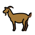

Gambie
Échantillonnage One Health pour comprendre et réduire la transmission de Campylobacter.
Humainsenfants, familles
et communautés
et communautés

animaux domestiques
Environnementfoyers, eau,
surfaces et sols
surfaces et sols
Humains · Animaux · Environnement · One Health
Prélèvements humains
›Résultats de laboratoire (humains)
›Cohortes pédiatriques incluses
›0–11 mois12–23 mois24–59 mois
Résultats de laboratoire par cohorte
›| Cohorte | Inclus | Culture + toutes les cohortes | PCR + cas uniquement | Confirmés + |
|---|
Répartition par sexe
›Âge des membres du foyer
›Animaux échantillonnés dans la communauté
›Animaux du foyer
›Environnement du foyer et eau
›iDonnées opérationnelles agrégées uniquement. Aucune donnée individuelle n’est publiée. La PCR est réalisée uniquement chez les cas diarrhéiques ; les prélèvements non humains sont analysés par culture.
Notes sur les données et leur rapprochement
Objectifs : protocole GETCampy publié. Actualité de terrain en Gambie →
Illustrations des animaux et de l’environnement : OpenMoji · CC BY-SA 4.0